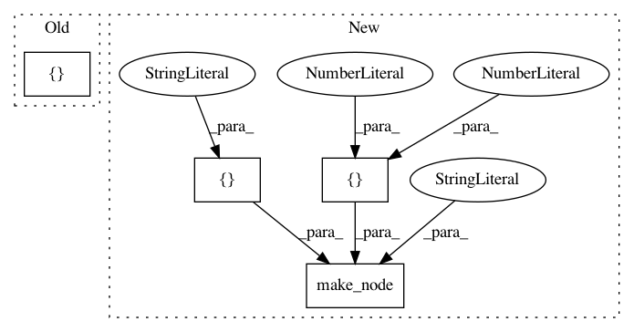

900254d3425ba728dacbf8e5e0ce29fce8eccd3f,tests/python/frontend/onnx/test_forward.py,,_test_upsample_bilinear_opset9,#,857
Before Change
in_shape = (1, 1, 3, 3)
out_shape = (1, 1, 3*scale, 3*scale)
y = helper.make_node("Upsample", ["in", "scales"], ["out"], mode="linear")
scales = [1.0, 1.0, 2.0, 2.0]
in_array = np.random.uniform(size=in_shape).astype(np.float32)
out_array = topi.testing.bilinear_resize_python(
in_array, (3*scale, 3*scale), "NCHW")
After Change
in_shape = (1, 1, 3, 3)
out_shape = (1, 1, 3*scale, 3*scale)
y = helper.make_node("Upsample", ["in", "scales"], ["out"], mode="linear")
scales = [1, 1, 2, 2]
in_array = np.random.uniform(size=in_shape).astype(np.float32)
out_array = topi.testing.bilinear_resize_python(
in_array, (3*scale, 3*scale), "NCHW")
ref_node = helper.make_node("Constant",
inputs=[],
outputs=["const"],
value=onnx.helper.make_tensor(name="const_tensor",
data_type=TensorProto.FLOAT,
dims=scales,
vals=np.random.random(scales).flatten().astype(float)))
shape_node = helper.make_node("Shape", ["const"], ["scales"])
graph = helper.make_graph([ref_node, shape_node, y],
In pattern: SUPERPATTERN
Frequency: 3
Non-data size: 4
Instances
Project Name: apache/incubator-tvm
Commit Name: 900254d3425ba728dacbf8e5e0ce29fce8eccd3f
Time: 2020-05-06
Author: mbrookhart@octoml.ai
File Name: tests/python/frontend/onnx/test_forward.py
Class Name:
Method Name: _test_upsample_bilinear_opset9
Project Name: onnx/onnx-tensorflow
Commit Name: 0ca9376558b45d54a932b84652c8f8fde45481fc
Time: 2017-10-22
Author: tian.jin1@ibm.com
File Name: test/test_node.py
Class Name: TestStringMethods
Method Name: test_run_all
Project Name: onnx/onnx-tensorflow
Commit Name: e26f4d138ddcd15635f93c3198a0f328111c0dc0
Time: 2018-10-06
Author: chhuang@us.ibm.com
File Name: test/backend/test_node.py
Class Name: TestNode
Method Name: test_slice